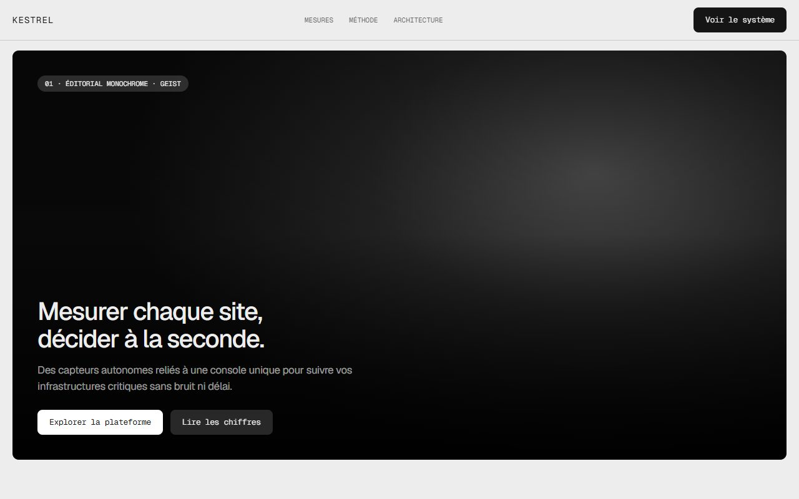
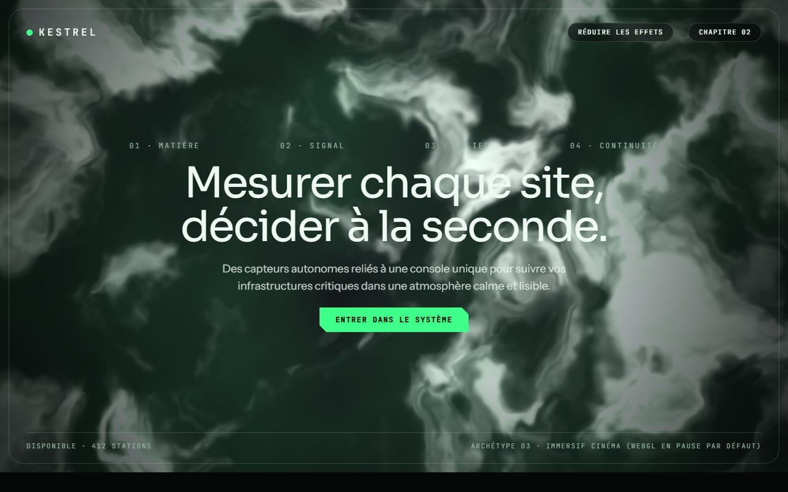
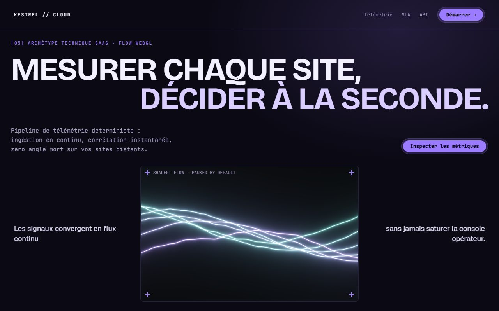

anduril.com · 0px · sombre
Industriel sobre
Noir mat, angles vifs 0 px, bento média plein cadre, aucune décoration.
Ouvrir le spécimen ↗Tact · Couche design open-source
Arrêtez de livrer la même interface générique par défaut. Comparez six styles radicalement opposés sur un même brief, mélangez ce qui plaît avec vérification WCAG, testez nos shaders WebGL2 et exportez votre contrat.
Zéro dépendance Three.js. Réactifs au pointeur, mis en pause automatiquement hors écran et sous mouvement réduit, avec repli CSS et code GLSL prêt à copier.
Chaque direction met en scène exactement les mêmes données métier pour comparer le style réel, pas le texte.
anduril.com · 0px · sombre
Noir mat, angles vifs 0 px, bento média plein cadre, aucune décoration.
Ouvrir le spécimen ↗
editorial-taste · 10px · clair
Achromatique #EDEDED / #151515, Geist + Mono, rythme 5 px, verre sans ombre.
Ouvrir le spécimen ↗
orchestrated.nl · hubtown · WebGL
Scène WebGL plein écran, cadre HUD, chapitres latéraux et bouton réduire les effets.
Ouvrir le spécimen ↗
5lab.co · 22px · clair
Titre décalé sans + Fraunces italique, badge circulaire tournant, formes mix-blend.
Ouvrir le spécimen ↗
north.cloud · langchain · WebGL
Titre en escalier, viseur à 4 croix sur le shader flow et densité monospace.
Ouvrir le spécimen ↗
mode.com · svgator · WebGL
Sable chaud, terre cuite et sauge, Newsreader éditorial, rayons 26 px, shader clair.
Ouvrir le spécimen ↗
Style international · 0px · clair
Blanc pur, grille noire 2 px apparente, index numéroté et accent orange vif.
Ouvrir le spécimen ↗design lab · mixeur hybride
Prenez la palette d'Éditorial, les rayons d'Industriel et le shader WebGL de Cinéma. Vérifiez les ratios WCAG AA/AAA en OKLCH et exportez style-dna.json ou tokens.css sans inscription.
Ouvrir le Design Lab →Tact reste indépendant par construction. Chaque verrouillage produit du JSON standard, des variables CSS et un fichier DESIGN.md prêt pour Claude Code, Codex, Cursor ou tout moteur applicatif.
L'échantillonnage sur 6 axes garantit de vrais choix visuels avant d'écrire la moindre ligne de CSS produit.
Assemblez la palette d'un style avec la typo ou les arrondis d'un autre en gardant des contrastes conformes.
Copiez style-dna.json, tokens.css, DESIGN.md ou studio.json sans compte utilisateur ni dépendance propriétaire.
Gratuit, open-source, sans inscription et ouvrable en local. Lancez le Design Lab ou parcourez les 76 effets et 12 prototypes.